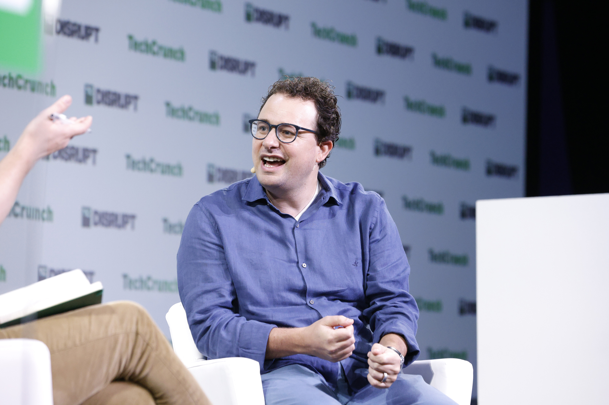

Executive Summary
2026년 5월, 앤트로픽의 기업가치가 9,650억 달러로 평가되며 오픈AI를 처음으로 앞질렀습니다. AI 업계의 순위가 뒤집힌 사건인데, 정작 그 순간을 만든 동력은 벤치마크 점수가 아니었습니다. 앤트로픽의 소비자 사용자 기반은 ChatGPT의 5% 수준에 불과합니다. 그런데도 매출에서 앞섰습니다. 더 똑똑한 모델이 아니라 다른 무언가가 가격을 움직였다는 뜻입니다.
그 무언가는 매출의 구성에 있었습니다. 앤트로픽 매출의 약 80%가 기업 고객에서 나옵니다. 기업 매출은 소비자 매출보다 끈끈하고 예측 가능해서, 투자자는 같은 1달러라도 더 높은 값을 매깁니다. 그리고 그 끈끈함을 지탱하는 것은 가격도 성능도 아닌 데이터 신뢰입니다. 학습에 고객 데이터를 쓰지 않고, 감사할 수 있게 만들고, 규제 산업의 컴플라이언스를 통과시키는 능력. 규제받는 기업이 자기 데이터를 믿고 맡길 수 있느냐가 채택의 진짜 병목이었습니다.
데이터를 다루는 쪽에 이 사건이 보내는 신호는 분명합니다. 모델 성능이 평준화될수록, AI 사업의 가치를 가르는 변수는 "누가 데이터를 믿고 맡기느냐"로 이동한다는 것입니다. 이 글은 9,650억 달러라는 가격표를 매출의 질과 그 질을 떠받친 데이터 신뢰로 되짚어, 왜 거버넌스가 곧 해자가 되는지 읽습니다.
주요 수치
출처: Fortune, TradingKey, CNBC
네 숫자가 이 역전의 무게를 보여 줍니다. 두 회사의 기업가치, 앤트로픽 매출에서 기업 고객이 차지하는 비중, 같은 시기 연환산 매출 규모, 그리고 소비자 사용자라는 흔한 잣대로는 설명되지 않는 격차까지. 순위를 바꾼 것이 사용자 수가 아니라 매출의 질이었다는 사실이 이 안에 들어 있습니다.
$9,650억
앤트로픽 기업가치
오픈AI($8,520억)를 처음 넘어선 세계 최고가 AI 스타트업
80%
기업 고객 매출 비중
앤트로픽 매출의 약 80%가 기업에서. 오픈AI는 40%대
$47B
연환산 매출 run rate
오픈AI 약 $25B를 앞섬. 곧 $50B 돌파 전망
5%
소비자 사용자 비중
ChatGPT 대비 앤트로픽 소비자 기반. 그래도 매출에서 앞섬
순위가 바뀌었다, 그런데 모델 때문이 아니었다
2026년 5월 말, 앤트로픽이 650억 달러 규모의 신규 펀딩 라운드를 마무리하면서 기업가치가 9,650억 달러로 책정됐습니다. 알티미터, 그린오크스, 드래고니어, 세쿼이아가 이끈 라운드였고, 이 평가로 앤트로픽은 세계에서 가장 비싼 AI 스타트업이 됐습니다. 비교 대상은 오픈AI입니다. 오픈AI의 마지막 펀딩 기준 가치는 8,520억 달러. 앤트로픽이 이 숫자를 처음으로 넘어선 것입니다.

흔한 해석은 "더 좋은 모델을 만들었으니 더 비싸졌다"입니다. 그런데 이 사건에서는 그 설명이 잘 들어맞지 않습니다. 모델 성능 벤치마크에서 두 회사는 엎치락뒤치락하는 사이이고, 일반 대중에게 더 익숙한 쪽은 여전히 ChatGPT입니다. 앤트로픽의 소비자 사용자 기반은 ChatGPT의 5% 안팎으로 추정됩니다. 사용자 수만 놓고 보면 비교가 되지 않습니다.
그런데도 매출에서는 앤트로픽이 앞섰습니다. 연환산 매출 run rate가 470억 달러 수준으로, 같은 시기 오픈AI의 약 250억 달러를 웃돕니다. 다음 달 말이면 500억 달러를 넘길 것이라는 전망도 나옵니다. 2025년 7월 40억 달러였던 run rate가 1년 만에 폭증한 것입니다. 분기 단위로도 흑자 전환이 예상되고, 비밀리에 S-1 초안을 제출하며 2026년 가을 상장 가능성이 거론됩니다.
핵심 질문: 사용자 수는 20분의 1인데 매출은 더 많고, 기업가치는 더 높습니다. 더 똑똑한 모델이 순위를 바꾼 게 아니라면, 무엇이 가격을 움직였을까요. 답은 매출이 어디서 나오는지에 있습니다.
80%라는 숫자, 끈끈한 매출의 경제학
앤트로픽 매출의 약 80%가 기업 고객에서 나옵니다. 오픈AI는 반대 방향입니다. 엔터프라이즈 비중이 40%대로 올라오긴 했지만 여전히 소비자 매출에 더 기대고, ChatGPT의 주간 활성 사용자는 9억 명을 넘습니다. 한 업계 관계자의 정리가 두 회사의 차이를 압축합니다. "오픈AI는 엔터프라이즈 제품을 만드는 소비자 회사, 앤트로픽은 소비자 제품을 가진 엔터프라이즈 회사."
이 차이가 왜 기업가치로 이어지는지는 매출의 성질을 보면 드러납니다. 소비자 매출은 빠르게 커지지만 변동도 큽니다. 사용자는 쉽게 들어오고 쉽게 떠납니다. 반면 기업 계약은 한번 맺으면 잘 끊기지 않습니다. 업무 흐름에 들어간 도구는 교체 비용이 크고, 부서 단위로 쓰임이 늘면서 계약은 해마다 확장됩니다. 높은 retention, 낮은 churn, 복리로 쌓이는 expansion. 투자자가 보는 것은 바로 이 예측 가능성입니다.
그래서 같은 1달러의 매출이라도 값이 다르게 매겨집니다. 내년에도 거기 있을 것이 확실한 매출에는 더 높은 멀티플이 붙습니다. 앤트로픽의 성장 엔진인 Claude Code가 이 구조를 그대로 보여 줍니다. 2025년 5월 출시된 이 도구는 2026년 2월 연환산 매출 25억 달러에 이르렀고, 매출의 절반 이상이 엔터프라이즈에서 나옵니다. 포춘 10대 기업 중 8곳이 앤트로픽의 엔터프라이즈 고객이고, 엔터프라이즈 지출에서 앤트로픽이 차지하는 점유율은 2025년 초 10%에서 2026년 2월 65% 이상으로 뛰었습니다.

고객 기반의 변화는 이 확장이 한두 대기업의 큰 계약이 아니라 넓고 두꺼운 토대 위에 있음을 보여 줍니다. 앤트로픽의 도구를 쓰는 기업은 2년 전만 해도 1,000곳이 채 되지 않았는데, 지금은 30만 곳을 넘습니다. 한번 들어온 기업이 부서를 늘려 가며 쓰임을 키우고, 그 위로 새 기업이 계속 쌓이는 구조입니다. 끈끈함은 떠나지 않는 한 명의 고객에서 나오는 게 아니라, 떠나지 않는 고객이 빠르게 늘어나는 데서 복리로 만들어집니다.
왜 중요한가: 소비자 바이럴은 사용자 수를 빨리 키우고, 엔터프라이즈 계약은 끊기지 않는 매출을 복리로 쌓습니다. 80%라는 숫자는 앤트로픽 매출의 대부분이 후자라는 뜻이고, 시장은 그 끈끈함에 프리미엄을 지불했습니다.
그 끈끈함의 바탕엔 데이터 신뢰가 있다
그렇다면 한 단계 더 들어가 봐야 합니다. 기업 매출이 끈끈한 건 맞는데, 애초에 규제받는 대기업이 왜 앤트로픽을 골랐을까요. 포춘 10대 기업 중 8곳이 같은 선택을 한 데에는 성능 점수로 환원되지 않는 이유가 있습니다. 금융, 헬스케어, 정부 같은 규제 산업에서 AI 도입의 진짜 장벽은 모델이 얼마나 똑똑한가가 아니라 "우리 데이터를 안전하게 맡길 수 있는가"였습니다.
앤트로픽은 이 질문에 제품으로 답했습니다. 고객 데이터를 모델 학습에 쓰지 않고, 데이터 보존 기간을 고객이 설정할 수 있게 하고, Trust Center로 데이터가 어떻게 처리되는지를 공개합니다. 여기에 클라우드플레어, 크라우드스트라이크, 옥타, 팰로앨토, 마이크로소프트 퍼뷰, 위즈, 지스케일러 등 28개 보안·컴플라이언스 플랫폼과 연동되고, Compliance API로 대화와 활동 로그를 기존 SIEM에서 감사할 수 있게 합니다. SOC 2 Type II 인증, 저장 데이터 AES-256 암호화, 전송 구간 TLS 1.2 이상, HIPAA와 BAA 지원도 갖췄습니다.

이런 기능이 추상적 안심이 아니라 채택의 결정 요인이라는 건 고객의 입에서 확인됩니다. 개발자 2,500명에게 Claude를 배포한 팰로앨토 네트웍스는 "앤트로픽은 모든 미팅에서 보안을 논한다. 최대 보안기업인 우리에게 그건 큰 의미"라고 평했습니다. GitLab은 Claude가 "불안정하거나 기만적인 행동을 억제하는 능력"에서 두드러진다고 봤습니다. 규제 산업의 구매자가 보는 것은 벤치마크 순위가 아니라 감사 가능성입니다. 앤트로픽은 그 감사 가능성을 부가 옵션이 아니라 기본 기능으로 만들어, 채택의 병목을 풀었습니다.
달라진 기준: 성능이 비슷해진 시대에 규제받는 기업의 선택을 가른 건 "감사할 수 있는가"였습니다. 학습에 데이터를 쓰지 않고, 로그를 추적할 수 있고, 컴플라이언스를 통과시키는 능력. 데이터 신뢰는 80% 매출의 바닥에 깔린 진짜 기반입니다.
시장이 가격으로 인증한 명제
여기까지 오면 세 가지가 하나로 이어집니다. 앤트로픽의 기업가치가 오픈AI를 넘어섰고, 그 동력은 매출의 80%를 떠받친 기업 고객이었으며, 그 기업 고객을 붙든 것은 데이터 신뢰였습니다. 이 인과를 끝까지 따라가면 하나의 명제에 닿습니다. AI 사업의 해자는 모델이 아니라 데이터 신뢰라는 것. 이번 역전은 그 명제를 추상이 아니라 9,650억 달러라는 가격표로 증명한 사건입니다.
비용 구조를 보면 이 해석이 더 분명해집니다. 오픈AI는 2030년까지 연 1,250억 달러의 훈련 비용을 전망하는 반면 앤트로픽은 약 300억 달러로, 네 배 가까운 차이가 납니다. 앤트로픽은 네 배 적게 쓰고도 매출에서 앞섰습니다. 모델에 더 많은 연산을 부어 성능을 끌어올리는 경쟁만으로는 설명되지 않는 결과입니다. 변별점이 모델의 절대 성능에서 "그 모델에 데이터를 믿고 맡길 수 있느냐"로 옮겨갔다는 신호입니다.

물론 이 우위가 영원하지는 않습니다. 앤트로픽은 미 정부와 법적 분쟁을 겪고 있고, 펜타곤은 앤트로픽을 공급망 리스크로 지정하며 수십억 달러 규모의 매출 위협을 경고했습니다. 신뢰로 쌓은 해자는 신뢰의 문제로 흔들릴 수도 있습니다. 그러나 그 위험의 성격조차 같은 이야기를 합니다. 이 회사의 가치를 떠받치는 것도, 위협하는 것도 결국 데이터와 신뢰의 문제라는 것입니다.
한 줄 요약: "데이터 신뢰가 해자다"는 그동안 주장이었습니다. 이번 역전으로 시장이 그 주장에 가격을 매겼습니다. 모델 성능이 평준화될수록 가치를 가르는 변수는 누가 데이터를 믿고 맡기느냐로 이동합니다.
데이터를 맡길 수 있게 만드는 일이 사업이다
이 사건을 데이터 의사결정자의 언어로 옮기면 이렇게 됩니다. AI 도입의 ROI는 모델의 벤치마크 점수가 아니라, 그 모델에 우리 데이터를 안전하게 맡길 수 있느냐에서 나옵니다. 앤트로픽이 증명한 것은 거버넌스가 비용이 아니라 매출의 원천이라는 사실입니다. 학습에 데이터를 쓰지 않는다는 약속, 감사할 수 있는 로그, 규제를 통과하는 컴플라이언스가 그대로 끈끈한 기업 매출로, 다시 기업가치로 환산됐습니다.
뒤집어 보면 모델을 사는 쪽에도 같은 잣대가 생긴다는 뜻입니다. 앞으로 기업이 AI 공급자를 고를 때 먼저 묻는 것은 성능 순위가 아니라 데이터를 어떻게 다루느냐일 것입니다. 그렇다면 데이터를 가진 쪽이 할 일도 분명해집니다. 자기 데이터를 'AI에 맡길 수 있는 상태', 다시 말해 출처가 분명하고 권리가 정리되고 품질이 검증된 상태로 만들어 두는 일. 그것이 곧 협상 테이블에서 신뢰를 입증하는 서류가 됩니다.
페블러스가 데이터를 AI-Ready 상태로 만드는 일을 해온 이유도 여기에 있습니다. 모델 경쟁이 평준화될수록 차이를 만드는 것은 데이터를 믿고 맡길 수 있게 만드는 능력이라는 판단입니다. 이번 역전은 그 판단을 시장이 가격으로 확인해 준 사례입니다. AI 사업에서 다음에 가장 먼저 확인하게 될 자산은, 더 큰 모델이 아니라 신뢰할 수 있는 데이터일 가능성이 큽니다.
마무리: 순위를 바꾼 건 더 똑똑한 모델이 아니라 데이터를 믿고 맡긴 기업 고객이었습니다. 데이터를 맡길 수 있게 만드는 일은 규제 대응 업무가 아니라, 매출을 끈끈하게 만들고 기업가치를 떠받치는 사업 그 자체가 되어 가고 있습니다.
참고문헌
업계·보도
- 1.Fortune. (2026). "Anthropic confidentially files for IPO at $965 billion valuation." Fortune. — 9,650억 달러 평가, 650억 달러 펀딩, 비공개 S-1 제출, 펜타곤 공급망 리스크 경고.
- 2.CNBC. (2026). "Anthropic overtakes OpenAI as most valuable AI startup." CNBC. — 앤트로픽이 오픈AI를 넘어선 기업가치 역전 보도.
- 3.TradingKey. (2026). "Anthropic IPO, OpenAI, and the Claude Code engine." TradingKey. — 연환산 매출 $47B vs $25B, Claude Code 매출, 엔터프라이즈 지출 점유율 10%→65%.
- 4.Al Jazeera. (2026). "Anthropic soars to $965bn valuation, leapfrogging OpenAI." Al Jazeera. — 펀딩 주도사, 다리오 아모데이, IPO 임박 맥락.
- 5.VentureBeat. (2026). "Anthropic finally beat OpenAI in business AI adoption — but 3 big threats remain." VentureBeat. — 엔터프라이즈 채택, 팰로앨토·GitLab 현장 증언.
- 6.Security Boulevard. (2026). "Anthropic's enterprise security and compliance integrations." Security Boulevard. — 28개 보안·컴플라이언스 플랫폼 연동, Compliance API, SIEM 감사.